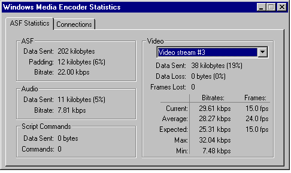
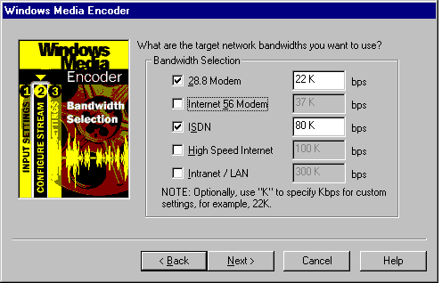
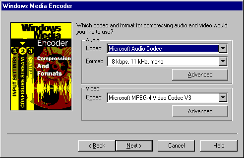

|
| ||
|
| ||
Bill Birney
Microsoft
Posted April 14, 1999
Contents
Introduction
How Does Intelligent Streaming Work?
How Do Content Developers Author for Intelligent Streaming?
Summary
Intelligent streaming is a set of features in Microsoft® Windows® Media Technologies that automatically detects network conditions and adjusts the properties of a video stream to maximize quality. Today's Internet connections are highly variable in terms of actual throughput achieved for any specific connection and range of possible connection speeds. For example, a user with a laptop computer can connect to an Internet Service Provider with a 300-kilobits-per-second (Kbps) DSL connection at home, a 1.5-megabits-per-second (Mbps) T1 connection at work, and a 56.6-Kbps modem connection while travelling on business. Furthermore, the actual throughput achieved in all of these scenarios is likely to vary. This is especially important for low-bandwidth modem connections, where the connection can vary by 50 percent or more of the maximum, depending on network and Internet Service Provider (ISP) congestion.
Because Windows Media Technologies is a connected, end-to-end, client/server system, the server and the client communicate with each other to establish actual network throughput and make a series of adjustments to maximize the quality of the stream. Intelligent streaming offers dramatic benefits to the user. It maximizes use of available bandwidth; in a DSL or LAN environment, users receive content tailored to their connection speed. It greatly improves the user experience; users connected by modem immediately notice the presentation is smoother, less jerky, and of generally higher quality.
Intelligent streaming, first introduced in version 3.0, has been significantly upgraded in Windows Media Technologies 4.0. Version 4.0 can automatically adjust between multiple video bit rates and automatically clean up video streams.
The most difficult task of streaming media over a network is maintaining a continuous presentation to the user in a highly changeable environment. Buffering is the biggest problem of streaming media. It is caused when Microsoft® Windows® Media Player, also known as the client, runs out of data and must wait for more. The client will always run out of data if the bit rate of the media exceeds the current bandwidth.
Unpredictability of bandwidth is taken for granted on the Internet. A user can, for example, originally connect to an Internet service provider (ISP) at 56 Kbps. Just because the connection speed is fast does not mean the bandwidth supports the bit rate. Actual bandwidth is determined by network conditions, and traffic on the Internet is constantly fluctuating, causing bandwidth to plunge to 18 Kbps one moment, then increase to 40 Kbps the next. If a user attempts to view media being streamed at 50 Kbps, the presentation suffers considerably when bandwidth is squeezed.
To ensure a continuous presentation, you must employ a system that adjusts the bit rate to changes in available bandwidth. Intelligent streaming does this by:
To take full advantage of intelligent streaming, content must be encoded with multiple bit rates. Multiple bit rate encoding is one of the primary new features of Windows Media Technologies 4.0 (Beta). In multiple bit rate encoding, up to six discrete, user-definable video streams, one low bit rate insurance video stream, and one audio stream are encoded into a single ASF stream. Each video stream is encoded from the same content, but each is encoded for a different bit rate. When a multiple bit rate .asf file, or live stream is played on Windows Media Player, which is connected to a Windows Media server, only one of the video streams is received: the one that is the most appropriate for current bandwidth conditions. The process of selecting the appropriate stream is completely invisible to the user, and this is what intelligent streaming is all about.
There are a number of steps in the intelligent streaming process. Each is a strategy: a way to modify the bit rate so it remains continuous on the client end regardless of the current bandwidth. As bandwidth fluctuates between server and client, the server detects the changes and renders the best strategy. When bandwidth is at its best, the server employs the first strategy. As conditions worsen, the server checks its list of options one by one until the bit rate is optimized for the current bandwidth.
Intelligent streaming uses the following strategies:
When a network is extremely congested, intelligent streaming attempts to maintain a continuous audio stream. The server decreases the video frame rate to minimize interruptions caused by buffering. If the bit rate is still too high, the server stops sending video frames. If audio quality starts to degrade, the client intelligently reconstructs portions of the stream to preserve quality.
The client intelligently post-processes the video stream to enhance quality even at very low bit rates. Windows Media Technologies includes a new intelligent filtering technology, which works in conjunction with the Microsoft MPEG-4 version 3.0 Video codec in Windows Media Player to smooth blockiness and remove ghosting artifacts, significantly improving the overall appearance of the video.
Blockiness also occurs during the decoding of high bit rate streams, but it is not as noticeable. A streaming media codec, such as Microsoft MPEG-4, encodes a video image by breaking it up into pixels. The lower the bit rate, the fewer the pixels. When too few pixels are used to create an image, they appear as blocks. The client post-processing filter used in intelligent streaming smoothes the edges of the blocks and erases certain other artifacts, such as ringing, so the resulting image is more pleasing to the eye.
With multiple bit rate encoding in Windows Media Technologies 4.0, ease of use has never been greater. Simply select a presupplied multiple bit rate template during an on-demand or live production, and the encoder automatically creates the multiple bit rate stream. For greater control, you can manually select the exact bit rates for each of up to six encoded streams. The insurance stream, client post-processing, and intelligent bit rate optimization are all automatic on-the-fly features. Best of all, now you only need to create and manage a single file to handle multiple bit rates.One of the main goals of software design in recent years has been to handle as many of the background tasks as possible automatically, so you as producer are free to focus on the quality of the content.
To set up Windows Media Encoder for multiple bit rate encoding, start the configuration wizard. To do so, open Windows Media Encoder, click File, and then click New. There are three multiple bit rate templates available in the QuickStart and Template with I/O options wizards.
Select the QuickStart option, and then click OK. The multiple bit rate templates are the first three in the Template list. To quickly configure Windows Media Encoder for multiple bit rate, click one of these templates options.
| Template | Streams |
| Dial-up Modems Multiple Bit Rate Video | Encodes two primary streams suitable for Internet dial-up connections: 28.8 Kbps and 56 Kbps.
Quality: Low bit rate audio, smooth movement at 15 frames per second, small frame size. |
| ISDN - Corporate Internet Multiple Bit Rate Video | Encodes two primary streams suitable for ISDN connections: 100 Kbps and 80 Kbps
Quality: Medium bit rate audio, smooth frame movement at 15 frames per second, medium image size. |
| Dial-up Modem - Corporate Internet Multiple Bit Rate Video | Encodes three primary streams suitable for ISDN and dial-up connections: 80 Kbps, 56.6 Kbps, 28.8 Kbps
Quality: Low bit rate audio, smooth movement at 15 frames per second, medium image size. |
For a more complete description of each, select a template, and read the text in the Description and Details boxes on this wizard screen.
To encode a live event using the Dial-up Modem - Corporate Internet Multiple Bit Rate Video template, select the QuickStart wizard.
Before encoding, open a performance monitor on your system. In the Microsoft® Windows NT® operating system, right-click the taskbar, click Task Manager, and then click the Performance tab. There are similar performance monitor options available for Microsoft® Windows® 98 and Windows® 95.
With Windows Media Encoder configured and ready, Microsoft® Performance Monitor running, and video and audio streams connected and adjusted, start encoding. If your computer has a speedy 400-MHz dual processor, CPU usage is 35 percent to 40 percent. With usage in that range, the encoder has enough processing power to handle rapid increases in frame detail. If you are encoding on a slower computer, however, you are pushing the capability of the processor. Using a 200-MHz single processor, for instance, CPU usage immediately climbs to 100 percent when encoding starts. While this condition is normal when encoding from one file to another, high CPU usage when encoding live usually means frames are being dropped or discarded.
To monitor the encoder as it is working, click the Summary Statistics button.

The numbers on this page change continuously as the content changes. Under Audio, the bit rate remains fairly steady, but under Video, the Current bit rate can change dramatically. As the amount of video detail per second increases, so must the bits per second. The ASF Statistics tab illustrates how the encoder continuously adjusts parameters to maintain the current bit rate as closely as possible to the Expected bit rate.
Click the arrow to display all the items in the Video list. Four video streams appear. Click Video stream #4. When you select this stream, the numbers under Video change to reflect activity in that stream. Stream #4 is the high bit rate stream, suitable for reception over an ISDN connection. The Expected video bit rate is 66.11 Kbps. To determine the overall bit rate for this video and audio stream combination, add this number to the audio bit rate plus some padding. The result is roughly 80 Kbps.
Select other video streams to view. Video stream #3 is delivered by Windows Media Services to clients connected through a 56-Kbps modem, and Video stream #2 is received by clients connected through a standard 28.8-Kbps modem. Video stream #1 is the insurance stream. Its overall bit rate is roughly 18 Kbps in this case. When doing multiple bit rate encoding, this extra stream is always added at a bit rate just less than the lowest bandwidth selected.
A multiple bit rate .asf file is larger than a single bit rate file of the same length because of the extra streams. Likewise, the bandwidth of the connection between the encoder and the server must be larger to handle more streams. In this example, five streams are delivered to the Windows Media Services server: four video streams and one audio. However, only two streams are delivered by the server to a client: the audio stream and one video stream.
When a client attempts to connect to the server to receive the live presentation, the server determines the current bandwidth of the connection. For example, a user connects via a 56-Kbps analog modem but does so at a time when the traffic is particularly high. When the user connects, the server determines bandwidth to be 45 Kbps. There is not enough bandwidth for the 80-Kbps stream, but there is enough for the 37-Kbps stream; therefore, the server sends video stream #3 and the audio stream.
After 10 minutes, network congestion increases, and bandwidth suddenly falls to 32 Kbps. Frame rate begins to suffer, and some packets are lost, but the server reacts immediately by switching to video stream #2. The user notices some degradation in image quality, but audio is continuous and disruption of the presentation is minimized. Twenty minutes later, bandwidth worsens again, dipping down to 14 Kbps. This is even too low for video stream #1, so the Windows Media server stops all video. The user notices the loss of video but is still able to listen to an uninterrupted audio stream, which only requires 8 Kbps of bandwidth. A few minutes later, bandwidth improves a great deal, and the server again is able to send video stream #3.
The negotiation between server and client is handled automatically and seamlessly. There are no manual adjustments necessary on either end. If multiple bit rate streams are available to the server, it uses them. The only thing you have to do as producer is make sure the streams are there. If one of the three multiple bit rate templates available in the QuickStart and Template with I/O options wizards is not exactly right for your needs, you can create an .asd file using the Custom Settings configuration wizard.
In the multiple bit rate environment, the single most important concern is CPU speed. While this was certainly a factor in the single, low bit rate days, it is crucial now. It is recommended that you invest in a computer with a processor speed of 400 MHz or greater and a dual processor if possible. A slower computer (for example, in the 200-MHz category) is suitable if live encoding is limited to only two of the lowest bit rates and file encoding time is not an issue. In a multiple bit rate environment, the more CPU speed available to the encoder, the more streams are possible; and the higher the bit rate and frame rate, the bigger the frame sizes and the better the quality.
Monitoring the performance of your CPU and memory resources is a simple way to monitor the quality of your encoding. Poor playback of your live video can often be attributed to an overloaded CPU. When you select an encoding template or enter your own settings with the Custom Settings wizard, you are, in effect, assigning a list of tasks for your CPU to perform. The more streams, the more frames per second, the larger the image size and the higher the quality you enter, the more tasks per second your CPU must perform. Windows Media Encoder automatically adjusts its task load to the given bandwidth and to the limits of the CPU. For instance, if you enter a high frame rate (30 frames per second) and a low bandwidth (28.8 Kbps), Windows Media Encoder keeps the bandwidth constant, and attempts to achieve the requested frame rate by dropping image quality.
Your CPU too can become overburdened, especially in multiple bit rate encoding. When the number of tasks per second is too great for the processing power of your CPU, the encoder adjusts to the environment by dropping frames. An occasional dropped frame during a high-action sequence is not that noticeable, but image quality and frame rate can be degraded when your CPU is at 100 percent most of the time. For the best quality, reduce the number of streams, image size, or frames per second until usage is no higher than 90 percent.
When encoding from one file to another, Windows Media Encoder adjusts to processor speed. Because time is not an issue, the encoder takes as long and uses as much CPU bandwidth as necessary to properly render the media without compromising quality. A 30-second file can take five minutes to encode on one machine and 10 seconds on another depending on processor speed. The encoder maximizes use of the CPU to keep encoding time to a minimum, so you can see that the CPU is at 100 percent. But unlike live encoding, this does not mean frames are being dropped.
This section explains how to set up Windows Media Encoder for live streaming using custom settings. On the Windows Media Encoder menu bar, click File, and then click New. Assuming current encoder settings have been saved, the Welcome screen appears. Select Custom Settings. The process is very similar for streaming from or to a file.
Input Source
On the first screen of the Custom Settings wizard, select Live source.
Capture Source
On the next screen, click the audio and video capture card or cards to be used, and check whether script commands will be sent. A small amount of bandwidth is set aside for script commands, so if you are not going to use them, do not select this option.
Bandwidth Selection #1
Here you have a choice of multiple bit rate or single bit rate video. Select Use multiple bit rate video. When you encode using multiple bit rate, you fully enable intelligent streaming in the Windows Media server and Windows Media Player. By selecting Use single bit rate video, you limit the intelligent streaming options available to the server. Single stream encoding is appropriate if network conditions are known and stable, the encoding computer is incapable of handling the higher CPU requirement of multiple bit rate encoding, or you are encoding audio-only content.
Bandwidth Selection #2

On this screen, decide which bandwidth streams to encode. Selecting 28.8 Modem, Internet 56 Modem, and ISDN covers the majority of modems used on the Internet. Selecting Intranet/LAN and High Speed Internet gives you good coverage for streaming over an internal network. Selecting all of the options covers any network bandwidth. For this example, select 28.8 Modem and ISDN.
Compression and Formats

After you have enabled multiple bit rate encoding and chosen the streams to encode, select one audio and one video compression type (codec) and format and one set of advanced video parameters. These settings are used to configure all of the streams. Deciding which settings to enter requires some experimentation and practice. There are no set rules. What you enter depends on the input source, the desired effect, and personal taste: all subjective decisions. But you do have many choices. Here are some points to consider:
Output Options, Transmission and Output File
The last three screens of the configuration wizard are the same for multiple bit rate as for single stream. On the Output Options screen, select whether you will stream over a network, to a file, or both. On the last two screens, configure for live transmission, and select an output file name and path.
Intelligent streaming is, for the most part, completely automatic. The interplay between client and server takes place behind the scenes. If you have added multiple bit rate streaming to your original media, the server can intelligently adjust the bit rate according to the current bandwidth, so the presentation received by the user is smooth.
Intelligent streaming is another step by Windows Media Technologies toward creating the ideal user experience. The goal is to make the experience transparent: the user should only be aware of the content, not the container, and you, the producer, should only have to be concerned with creating great content. Intelligent streaming is a major step toward the understanding and management of media presentation over networks. With Windows Media Technologies 4.0, you can create one .asf file or encode one live stream, and users connected at many different speeds with a multitude of network conditions can enjoy a high-quality presentation. Most importantly, they can enjoy the content without experiencing irritating interruptions and transmission break-up.
Did you find this material useful? Gripes? Compliments? Suggestions for other articles? Write us!
© 1999 Microsoft Corporation. All rights reserved. Terms of use.